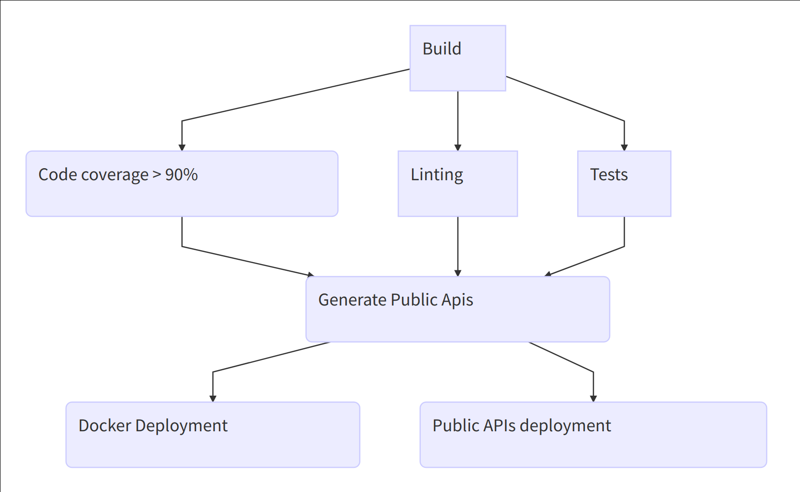
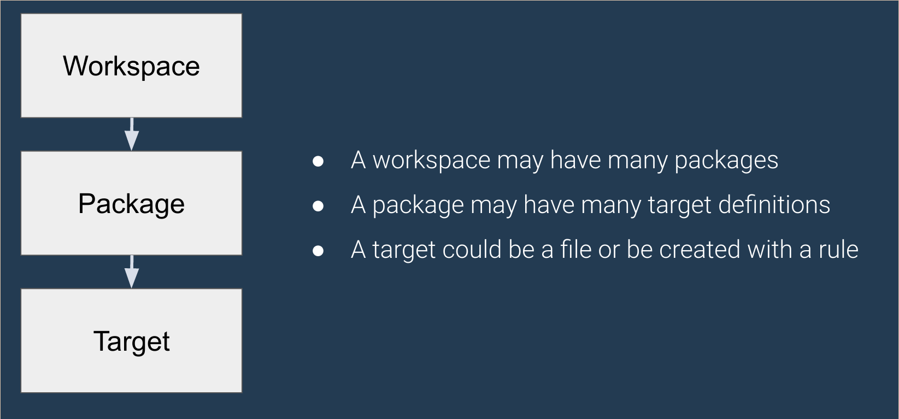
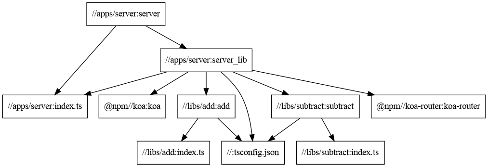

Tristan Foureur
Co-Founder & CTO @ WeMaintain
Découverte de TypeScript

Passage au microservice

Flow de build
Consolidation dans un monorepo


Démo simple
.
├── apps
│ └── server
├── BUILD.bazel
├── libs
│ ├── add
│ └── subtract
├── package.json
├── tsconfig.json
├── WORKSPACE.bazel
└── yarn.lock
Structure
Fichier WORKSPACE (1/2)
workspace(
name = "demo",
managed_directories = {"@npm": ["node_modules"]},
)
load("@bazel_tools//tools/build_defs/repo:http.bzl", "http_archive")
http_archive(
name = "build_bazel_rules_nodejs",
sha256 = "b6670f9f43faa66e3009488bbd909bc7bc46a5a9661a33f6bc578068d1837f37",
urls = ["https://github.com/bazelbuild/rules_nodejs/releases/download/1.3.0/rules_nodejs-1.3.0.tar.gz"],
)
WORKSPACE (2/2)
load("@build_bazel_rules_nodejs//:index.bzl", "yarn_install")
yarn_install(
name = "npm",
package_json = "//:package.json",
yarn_lock = "//:yarn.lock",
)
load("@npm//:install_bazel_dependencies.bzl", "install_bazel_dependencies")
install_bazel_dependencies()
load("@npm_bazel_typescript//:index.bzl", "ts_setup_workspace")
ts_setup_workspace()
Paquets Bazel
- Est une unité de code dans le Workspace
- Contient un ou plusieurs fichiers à build ensemble et qui partage des dépendances communes
- Contient un fichier
BUILDqui expose des règles Bazel pour le construire/tester
Cibles Bazel (targets)
- Dans un fichier
BUILDon peut avoir zéro ou plusieurs targets - Les targets peuvent être des fichiers ou des règles qui définissent des tâches
- Une target peut dépendre d'une autre target
- Les dépendances circulaires sont interdites
.
├── apps
│ └── server
│ ├── BUILD
│ ├── index.ts
│ └── tsconfig.json
├── BUILD.bazel
├── libs
│ ├── add
│ │ ├── BUILD
│ │ ├── index.ts
│ │ ├── package.json
│ │ └── tsconfig.json
│ └── subtract
│ ├── BUILD
│ ├── index.ts
│ └── package.json
├── package.json
├── tsconfig.json
├── WORKSPACE.bazel
└── yarn.lock
Fichier BUILD (1/2)
# lib/add/BUILD
package(default_visibility=["//visibility:public"])
load("@npm_bazel_typescript//:index.bzl", "ts_library")
ts_library(
name = "add",
module_name = "@demo/add",
srcs = ["index.ts"],
)
Fichier BUILD (2/2)
# apps/server/BUILD
load("@npm_bazel_typescript//:index.bzl", "ts_library")
load("@build_bazel_rules_nodejs//:index.bzl", "nodejs_binary")
ts_library(
name = "server_lib",
srcs = glob(
["*.ts"],
),
deps = [
"@npm//@types/node",
"@npm//koa",
"@npm//koa-router",
"//libs/add"
],
)
nodejs_binary(
name = "server",
data = [
":server_lib",
],
entry_point = ":index.ts",
)
Graph de dépendance
Aller plus loin
- Slack de Bazel : bazelbuild.slack.com
- Cache partagé
- Remote build execution
ibazelpour watch le code- Gestion des dépendances transitives
En conclusion
- Passer sur Bazel : long et douloureux... mais en vaut la peine !
- Temps de pipeline ramené à 3-5minutes comparé à 2x 45 minutes
- Faîtes-vous accompagner si vous portez une codebase importante
- Encore certaines petites choses instables (Jest)
La minute de pub !
Questions ?
Retrouvez la démo et les slides sur github.com/wemaintain/bazel